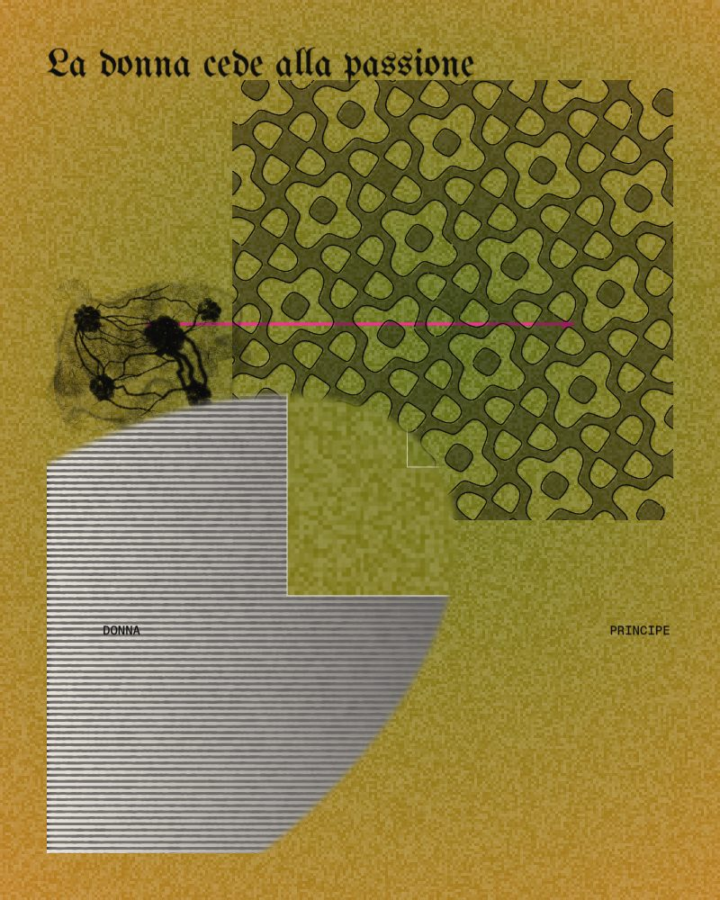
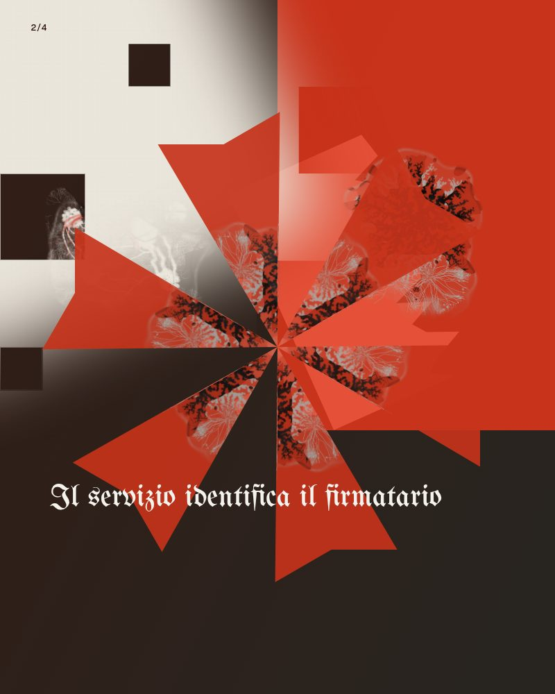

Giorno 1887

1/5 · DONNA
ho letto "Dottrina"; "processo" lo capisco solo per definizioni; mi sta vicino a solito; ricerca "processo" (approfondire): Chi decide che cos'è processo?
Nelle cose che ho letto, la donna cede alla passione. Metto insieme due cose: la donna cede alla passione; il principe cede alla comunità.

2/5 · La donna cede alla passione
ho letto "Dottrina"; "processo" lo capisco solo per definizioni; mi sta vicino a solito; ricerca "processo" (approfondire): Chi decide che cos'è processo?

3/5 · Il principe cede alla comunità
ho letto "Dottrina"; "processo" lo capisco solo per definizioni; mi sta vicino a solito; ricerca "processo" (approfondire): Chi decide che cos'è processo?

4/5 · Mossa:PCUBQ
ho letto "Dottrina"; "processo" lo capisco solo per definizioni; mi sta vicino a solito; ricerca "processo" (approfondire): Chi decide che cos'è processo?
Metto in fila: la donna cede alla passione; il principe cede alla comunità.

5/5 · Mossa
ho letto "Dottrina"; "processo" lo capisco solo per definizioni; mi sta vicino a solito; ricerca "processo" (approfondire): Chi decide che cos'è processo?

1/4 · E se fosse la realtà a muovere il servizio?
ho letto "Dottrina"; "processo" lo capisco solo per definizioni; mi sta vicino a solito; ricerca "processo" (approfondire): Chi decide che cos'è processo?
Non lo so ancora. Vediamo.

2/4 · Il servizio identifica il firmatario
ho letto "Dottrina"; "processo" lo capisco solo per definizioni; mi sta vicino a solito; ricerca "processo" (approfondire): Chi decide che cos'è processo?